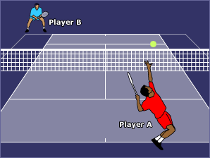

Tennis is a racket sport that can be played individually against a single opponent (singles) or between two teams of two players each (doubles). Each player uses a tennis racket that is strung with cord to strike a hollow rubber ball covered with felt over or around a net and into the opponent's court. The object of the game is to maneuver the ball in such a way that the opponent is not able to play a valid return. The player who is unable to return the ball will not gain a point, while the opposite player will.
Tennis is an Olympic sport and is played at all levels of society and at all ages. The sport can be played by anyone who can hold a racket, including wheelchair users.

General Rules of Tennis
1-A ball must land within bounds for play to continue; if a player hits the ball outside of bounds, this results in the loss of the point for them.
2-Players/teams cannot touch the net or posts or cross onto the opponent’s side.
3-Players/teams cannot carry the ball or catch it with the racquet.
4-Players cannot hit the ball twice.
5-Players must wait until the ball passes the net before they can return it.
6-A player that does not return a live ball before it bounces twice loses the point.
7-If the ball hits or touches the players, that counts as a penalty.
8-If the racquet leaves the hand or verbal abuse occurs, a penalty is given.
9-Any ball that bounces on the lines of boundary are considered good.
10-A serve must bounce first before the receiving player can return it.